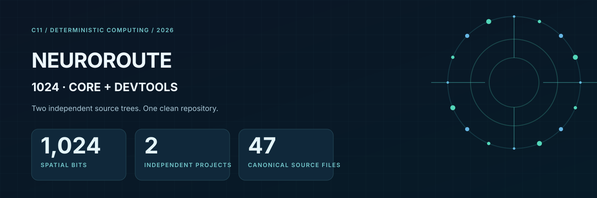
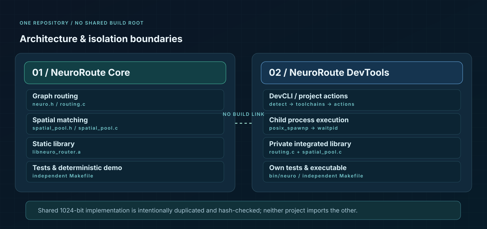
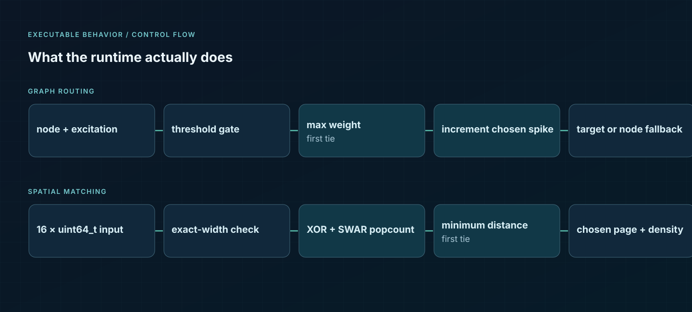
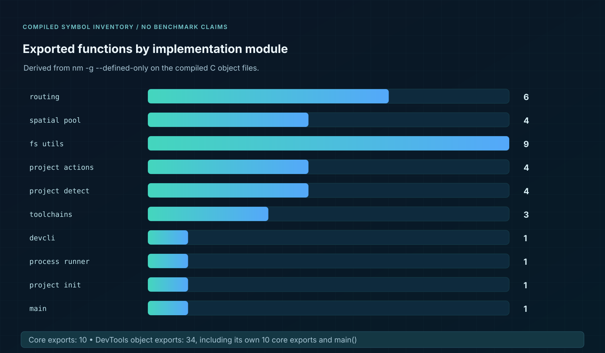

NeuroRoute Core
Maximum-weight graph routing, excitation threshold/fallback, first-index tie breaking, precise 1024-bit XOR/Hamming spatial matching, static C11 library.
Core documentation ↗
EXACT WIDTH · C11 · DETERMINISTIC SELECTION
NeuroRoute 1024 pairs a deterministic routing/spatial C11 core with an independently buildable DevTools CLI. Both retain their own source, tests, licensing and runtime copy inside a single GitHub monorepo.
MONOREPO BOUNDARY
Maximum-weight graph routing, excitation threshold/fallback, first-index tie breaking, precise 1024-bit XOR/Hamming spatial matching, static C11 library.
Core documentation ↗Standalone project-type detection, toolchain resolution, safe argument-vector child invocation, and project init/build/run/test/clean actions.
DevTools documentation ↗COMPONENT TOPOLOGY


REPRODUCIBLE IMPLEMENTATION FACTS
Numbers are defined global function symbols extracted from compiled object files. They do not measure execution speed, memory efficiency, or safety.

Full compiled function list ↗RELEASE GATE
python3 scripts/check_boundaries.py make verify ./projects/neuroroute-devtools-1024/bin/neuro help
Locally validated on Linux with GCC and Clang, strict warnings, project unit tests, CLI smoke tests, static GCC analysis, and Address/UndefinedBehaviorSanitizer with leak detection disabled. The CI matrix is a requested future check, not a claim of GitHub-hosted tests already executed. See validation limitations.